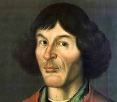

Slide 1 Cześć to ja Mikołaj Kopernik. Oprowadzę cię po szlaku na temat moje życie. Po prostu klilnij ten guzik obok mnie.

Slide 2 Cześć to ja Mikołaj Kopernik. Oprowadzę cię po szlaku na temat moje życie. Po prostu klilnij ten guzik obok mnie.
Slide 3 Cześć to ja Mikołaj Kopernik. Oprowadzę cię po szlaku na temat moje życie. Po prostu klilnij ten guzik obok mnie.
Slide 4 Cześć to ja Mikołaj Kopernik. Oprowadzę cię po szlaku na temat moje życie. Po prostu klilnij ten guzik obok mnie.
Slide 5 Cześć to ja Mikołaj Kopernik. Oprowadzę cię po szlaku na temat moje życie. Po prostu klilnij ten guzik obok mnie.
Slide 6 Cześć to ja Mikołaj Kopernik. Oprowadzę cię po szlaku na temat moje życie. Po prostu klilnij ten guzik obok mnie.
Slide 7 Cześć to ja Mikołaj Kopernik. Oprowadzę cię po szlaku na temat moje życie. Po prostu klilnij ten guzik obok mnie.
I dalej w kosmos
Teoria Heliocentryczna
To teoria stworzona przez Mikołaja Kopernika, w której słońce jest na środku Układu Słonecznego a wszystkie planety krążą wokół niego. Przed teorią heliocentryczną była teoria geocentryczna, którą stworzył Ptolemeusz. Teoria ta mówiła o tym, że ziemia jest w centrum Układu Słonecznego a słońce wraz z innymi planetami okrążają naszą planetę. Dzięki Giordanowi Brunowi duchowni przestali patrzeć na teorię Kopernika jako głupi mit.
Czarne Dziury
Czarna Dziura to obszar czasoprzestrzeni, który przez grawitację uniemożliwia wydostanie się z niego. Czarne dziury powstają gdy zbierze się wystarczająco dużo materii w wystarczająco małym miejscu co wytłumaczone jest w teorii względności Alberta Einsteina. Czarna dziura pochłania wszystko co napotka nawet światło, które jest najszybszą cząstką jaką znamy dlatego jest nazywana „czarną”. Na ziemi można stworzyć mikro czarne dziury w zderzaczach cząstek ale tylko na chwile.
Gwiazdy
Gwiazdy to ciała niebieskie, które są wielką ilością materii skupionych przez grawitację. Zastanawiałeś się kiedyś dlaczego wszystko widzisz podczas dnia bez użycia latarki? Widzisz wszystko dzięki fotonom które są generowane właśnie w gwiazdach. To właśnie gwiazdy produkują najwięcej fotonów, które można spotkać na ziemi. Najcięższa gwiazda to R136a1 a najlżejsza to EBLM J0555-57Ab
Jowisz
Czy wiedziałeś, że Jowisz ma ocean? Nie przesłyszałeś się Jowisz ma ocen a jego głębokość jest prawi tak głęboka jak długość objętości ziemi. Jowisz jest gigantem gazowym, który ma większą masę o 2,5 razy od wszystkich planet w układzie słonecznym. Jest on zbudowany z 71% z wodoru, 24% z helu i 5% z amoniaku, metanu oraz wody. Jedną z najbardziej znanych cech Jowisz jest Wielka Czerwona Plama, która jest antycyklonem z szerokością trzech kul ziemskich paza tym jest na Jowiszu już od kilkuset lat na Jowiszu.